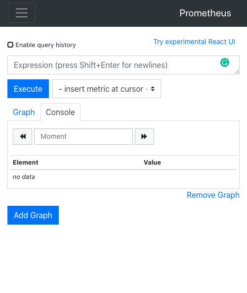

Prometheus
Prometheus 是一个开源的监控系统和时间序列数据库。Istio 使用 Prometheus 来记录指标，跟踪 Istio 和网格中的应用程序的健康状况。
要安装 Prometheus，我们可以使用 Istio 安装包中 /samples/addons 文件夹中的示例安装。
$ kubectl apply -f istio-1.9.0/samples/addons/prometheus.yaml
serviceaccount/prometheus created
configmap/prometheus created
clusterrole.rbac.authorization.k8s.io/prometheus created
clusterrolebinding.rbac.authorization.k8s.io/prometheus created
service/prometheus created
deployment.apps/prometheus created
要打开 Prometheus 仪表板，我们可以使用 Istio CLI 中的 dashboard 命令：
$ istioctl dashboard prometheus
http://localhost:9090
现在我们可以在浏览器中打开 http://localhost:9090，进入 Prometheus 仪表板，如下图所示。

部署示例应用
为了看到一些请求和流量，我们将部署一个 Nginx 实例：
$ kubectl create deploy my-nginx --image=nginx
deployment.apps/my-nginx created
为了能够产生一些流量并访问 Nginx Pod，我们需要以某种方式让它被访问。
最简单的方法是将 Nginx 部署作为 Kubernetes LoadBalancer 服务公开：
kubectl expose deployment my-nginx --type=LoadBalancer --name=my-nginx --port 80
注意：在课程的后面，我们将学习如何使用 Istio 资源并通过 Istio 的入口网关暴露服务。
现在我们可以运行 kubectl get services，获得 my-nginx 服务的外部 IP 地址：
$ kubectl get svc
NAME TYPE CLUSTER-IP EXTERNAL-IP PORT(S) AGE
kubernetes ClusterIP 10.48.0.1 <none> 443/TCP 73m
my-nginx LoadBalancer 10.48.0.94 [IP HERE] 80:31191/TCP 4m6s
让我们把这个 IP 地址存储为一个环境变量，这样我们就可以在整个实验中使用它。
export NGINX_IP=$(kubectl get service my-nginx -o jsonpath='{.status.loadBalancer.ingress[0].ip}')
现在你可以对上述 IP 运行 curl，你应该得到默认的 Nginx 页面。
$ curl $NGINX_IP
<!DOCTYPE html>
<html>
<head>
<title>Welcome to nginx!</title>
<style>
body {
width: 35em;
margin: 0 auto;
font-family: Tahoma, Verdana, Arial, sans-serif;
}
</style>
</head>
<body>
<h1>Welcome to nginx!</h1>
<p>If you see this page, the nginx web server is successfully installed and
working. Further configuration is required.</p>
<p>For online documentation and support please refer to
<a href="http://nginx.org/">nginx.org</a>.<br/>
Commercial support is available at
<a href="http://nginx.com/">nginx.com</a>.</p>
<p><em>Thank you for using nginx.</em></p>
</body>
</html>
让我们向我们在开始时创建的 $NGINX_IP 环境变量提出几个请求。然后，从 Prometheus UI 中，你可以搜索 Istio 的一个指标（例如 istio_requests_total），以了解哪些数据点正在被收集。
下面是一个来自 Prometheus 用户界面的示例元素：
istio_requests_total{app="my-nginx", connection_security_policy="none", destination_app="my-nginx", destination_canonical_revision="latest", destination_canonical_service="my-nginx", destination_cluster="Kubernetes", destination_principal="unknown", destination_service="my-nginx.default.svc.cluster.local", destination_service_name="my-nginx", destination_service_namespace="default", destination_version="unknown", destination_workload="my-nginx", destination_workload_namespace="default", instance="10.92.4.4:15020", istio_io_rev="default", job="kubernetes-pods", kubernetes_namespace="default", kubernetes_pod_name="my-nginx-6b74b79f57-r59sf", pod_template_hash="6b74b79f57", reporter="destination", request_protocol="http", response_code="200", response_flags="-", security_istio_io_tlsMode="istio", service_istio_io_canonical_name="my-nginx", service_istio_io_canonical_revision="latest", source_app="unknown", source_canonical_revision="latest", source_canonical_service="unknown", source_cluster="unknown", source_principal="unknown", source_version="unknown", source_workload="unknown", source_workload_namespace="unknown"} 12